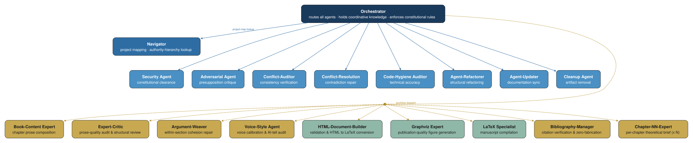

Chapter 3: Organizations, Capital, and the Division of Labor
Part II: The Agent Team
1. Lachmann's Capital Theory
One might be surprised to find that the creation and maintenance of a team of AI agents is at least as much a challenge in the domains of capital and management as it is a technical challenge. In the proceeding argument, we will conceptualize the agent infrastructure as a form of capital. This metaphor builds upon the metaphor of the firm as a project intended to manifest a bundle of goals. This approach requires a granular theory of capital and its structure.
Ludwig Lachmann spent much of his career on a problem that most economists preferred not to acknowledge. The aggregate production function treats capital as a homogeneous fund, K, that is perfectly substitutable and infinitely divisible. A lathe and a warehouse and a patent all collapse into one variable. In this framing, capital is just productive stuff. Add to the capital stock, get more output. Lachmann found this absurd. "Capital is not a homogeneous fund," he wrote, "but a complex structure of heterogeneous, specific, and complementary goods" (Lachmann 1956). The aggregate conceals everything that matters about how production actually works.
Lachmann inherited a tradition. Menger (1871) had introduced goods orders, the recognition that productive goods derive their value from their contribution to consumer goods. Hayek (1941) argued that capital goods embody the knowledge available at the time of their construction. Where Hayek emphasized embedded knowledge, Lachmann and Kirzner emphasized the plan (Lachmann 1956; Kirzner 1966). A capital good acquires productive significance only within the plan that assigns it a role, connects it to its complements, and directs it toward an end. Lewin (1999; Lewin and Cachanosky 2019) extends the analysis into process terms: since plans are always being revised as entrepreneurs learn and circumstances change, the capital structure is perpetually in reorganization. Goods that were complements may become redundant. Goods once peripheral may become central, not because the goods themselves have changed but because the plan that defined their roles has.
Agent documentation files exhibit each of the properties Lachmann identified in physical capital: heterogeneity, specificity, and complementarity. And like physical capital, their structure is intelligible only in terms of the plan (the project, in the language of Foss and Klein 2012) that organizes them. Having built and maintained an agent team of roughly twenty specialized agents across multiple projects, I can confirm that the capital-theoretic vocabulary is not analogical. The problems Lachmann described, which includes complementarity breakdown, maladapted specificity, the imperative to restructure when plans change, are the daily operational reality of agent-team management.
1.1 Heterogeneity, Specificity, Complementarity
Capital goods differ in kind. A lathe cuts metal. A truck transports goods. A warehouse stores inventory. No quantity of lathes substitutes for the absence of a truck. The productive capacity of an arrangement depends on having the right configuration of different goods, not a sufficient quantity of undifferentiated "capital." This is heterogeneity.
Each good is also designed for a particular use within a particular productive context, and its contribution depends on that context. Lachmann insisted that specificity is relational: a good is specific relative to the plan for which it was designed, not in the abstract. Change the plan and the same good may become useless, not because the good has changed but because the plan that gave it purpose has.
And capital goods must work together. A lathe without raw material, without a skilled operator, without a factory to house it, produces nothing. But complementarity, like specificity, is plan-dependent. Goods are complements when the plan assigns them roles that require each other's presence. Change the plan and the complementarities dissolve, even though the goods themselves remain physically unchanged.
A factory with ten machines arranged into an efficient production line and a factory with the same ten machines piled in a warehouse have the same aggregate capital stock, but the capacity of one of these stocks is underutilized. Competitive forces tend to allocate such resources away from owners who maintain such low-productivity arrangements. For our purposes, we are interested in the fact that better or worse arrangements are possible and that the difference in quality may be a subtle matter. A project with extensive but poorly organized agent documentation will be less productive than a project with modest but carefully organized documentation. Total amount matters less than the quality of the arrangement. As is often the case in art, less is more.
2. Agent Files Embody Their Technology
2.1 Technology Embedded in the Good
Standard macroeconomics presentations of technology treat it as separable from capital. Technology is an abstract recipe that can be applied to any set of inputs. What is actually measured is the average productivity of capital, typically referred as total factor productivity. While this may be a useful empirical approach, depending on the question being asked, technology is, in fact, embedded in specific capital goods (Lachmann 1956). The manual may describe the technology, but the technology as a productive force exists only in the good that embodies it.
Hayek (1941) had made a similar point: capital goods embody the knowledge available at the time of their construction. A good designed with inferior knowledge is a less productive instrument regardless of what the state of the art has since achieved. The knowledge is locked into the design, and upgrading requires new investment, the construction of new goods that embody improved knowledge.
For agent documentation, the embeddedness thesis is the key to understanding why these files are capital goods in a non-trivial sense. The "technology" of agent coordination (the expertise in workflow design, the knowledge of model behavior under different context conditions, the constitutional principles that enable team coherence) does not exist independently of the agent files. Employed for the creation of this work, a voice-style agent file is an example of that technology. The knowledge of how to calibrate voice fidelity, which includes voice features, deviation-detection protocols, sample passages calibrated to the principal's published prose, is 1) interfaced with the CoPilot documentation formatting standard and 2) passed to the selected LLM that is attached to the infrastructure provided by CoPilot. The file is both a part of this technological stack and has this broader technology stack embedded in it. Any measure of total factor productivity for this project is a backward looking measure concerning productivity. Again, useful but incomplete for our purposes.
While the technology embedded in any single capital good is specific to that good and its plan, multiple goods across multiple plans may independently instantiate the same productive pattern. When convergence of this kind occurs, the common structure becomes abstractable: it can be named and propagated as a template, even though each instance remains embedded in its home file. A cross-project pattern-extraction process discovers these convergent patterns. What it abstracts is the common structure that multiple files have independently instantiated. The embedded character of each instance remains intact through abstraction. Recognition and propagation of the pattern creates a new, higher-level capital good that encodes the common structure without detaching the technology from any particular file.
2.2 Plan-Dependence
The core of Lachmann's theory, the feature that distinguishes it from other positions in the capital-theoretic tradition, is plan-dependence. Capital goods have no inherent "structure" apart from the plan that deploys them. Complementarity is a logical relationship within a plan, not a physical relationship between goods. Specificity is relative to a plan, not to the good itself. It is inherently subjective. The project is a bundle of plans that arranges capital.
The Lachmannian "plan" and the Foss-Klein "project" are two descriptions of the same organizational reality viewed from different levels. A plan is the logical structure that organizes capital goods into a productive arrangement. At the level of the entire economic system, capital structure includes the full set of plans that interact and compete with one another. A project is the coherent set of goals toward which an organization is oriented. It refers specifically to the level of a firm or, more broadly, an organization.
If we think of each agent team as an organization oriented toward continuous development of a project, we can better conceptualize the challenges faced by each agent team. Human entrepreneurs hold their plans as expectations about the future, subject to continuous revision under uncertainty (Lachmann 1956, Ch. 2). Lewin (1999, Ch. 5–6; Lewin and Cachanosky 2016) draws out the structural implication: because capital goods derive their productive significance from plans, and plans are always being revised, the capital structure is perpetually in disequilibrium: not a defective condition awaiting resolution, but the normal state of production under genuine uncertainty. Non-human agents face the same uncertainty. Agent-team plans are encoded in project-level instructions and orchestrator workflow definitions. They are more explicit and more articulable than the tacit expectations of human entrepreneurs but equally subject to ontological uncertainty as conditions change in a manner that violate agent expectations (Lane and Maxfield 2005). The plans embodied in the structure and text of the agent teams must, thus, be continually revised.
Plan-dependence collapses the distinction between a capital good's technical properties and its interpretive context. The same agent file receives a different interpretation depending on which plan is operative. When a project expands in scope, every existing agent file is reread within a new plan frame: an orchestrator's routing tables acquire new entries, an auditor's category boundaries expand, a bibliography manager's citation-key conventions are extended. The plan constitutes the interpretive frame within which each file's instructions acquire their operative meaning. Part of the uncertainty faced by an agent team is hermeneutical in nature. The variety of contexts that such a team may face cannot be prestated. Interpretive frameworks must be capable of handling this variety of unseen context. And the team must be prepared to coherently adapt its own documentation and structure in response to changes in context.
3. Agent Files as Capital Goods
The agent team's members and functions, which will be presented in detail later (Chapters 5-14), are presented in the adjacent figure. A project-level instructions file governs all of them. No file can substitute for another. The bibliography manager cannot serve as a navigator, and the navigator cannot enforce security. They differ in content, in function, and in when they are loaded into context.

Each file is designed for a particular role within a particular project. A LaTeX specialist file is specific to manuscript compilation. It cannot audit bibliography entries. Even functional agents, which tend toward broader scope than domain agents (a distinction developed in Section 8), remain specific to the governance patterns of the agent-team framework. The degree of specificity varies along a gradient. Project-level instructions are least specific: they apply to all agents and all tasks. Individual agent files are moderately specific: they apply to a defined role. Generated strategy files and reference data are most specific: they apply to a single procedure or data domain.
Agent files must work together to produce output. The orchestrator routes work to agents that produce drafts that are reviewed by auditors that enforce conventions defined in the instructions file. But these complementarity relationships are properties of the plan, not of the files themselves. If the plan reassigns coordination to a different mechanism or reassigns resource-location to a different agent, the complementarity relationships change even though the files remain the same text. Across the chapters pertaining to specific agents, I will present a variety of workflows used by the agent team for various tasks. The system of documentation is more productive than the sum of individual files, and this systemic productivity exists only because the plan interconnects them. The workflow is a clear instance of a plan that defines the complementarities of these varied units of capital.
A well-constructed agent file lowers the cost of coordinating activity according to the project's requirements by encoding relevant knowledge in a persistent, structured form. Without documentation, every agent interaction requires the human principal to re-specify context, re-establish conventions, and re-explain the project state. In ordinary software, documentation is descriptive. In an agent team, documentation is descriptive and operative. An agent file constitutes what the agent does as this document is front-loaded for every task involving the agent attached to it. The technology of agent coordination is embedded in quality files that comprise quality architecture. That is what makes documentation files capital goods: they are productive instruments that embody the technology of their domain.
4. Refactoring and the Structure of Production
Capital structures must be reorganized when the production plan changes. A shift in demand, a new technology, a revised set of goals: each requires restructuring the relationships among goods, not simply adding or removing individual items. When the plan changes, goods that were complements may become irrelevant and goods that were peripheral may become central. A factory retooled for a new product line uses the same machines in a different arrangement and produces different output. The aggregate capital stock remains unchanged, but the productive capacity (i.e., total factor productivity) is transformed.
Agent documentation faces the same requirement. When project goals change, when new capabilities emerge, or when old workflows are superseded, the plan that gave the old structure its meaning has changed. Documentation must be restructured. Adding a new agent file without restructuring the complementarity relationships (without updating the orchestrator's routing, without revising the authority hierarchy, without ensuring that the new agent's domain does not overlap with existing agents) is the organizational equivalent of dropping a new machine into a factory without connecting it to the production line.
This often requires a process a trial and error. After accumulating more than 10 teams, I realized that it was time to build out an automated daily pipeline to ensure that documentation of agents is fresh and that the domains of functional agents remain aligned across projects. I wrote the refactoring workflow in a specialized reference file accessible to an abstract (meta) orchestrator. The lesson generalizes: a structured protocol for identifying extraction opportunities, proposing decompositions, and implementing the resulting configuration transforms the team's capital structure in ways that outlast any single session.
4.1 The Cost of Restructuring
Capital restructuring takes time and can introduce errors. Capital goods that are not maintained, updated, and repurposed become liabilities. They embody technology that no longer serves the current goals. In the agent context, stale or poorly organized documentation actively misdirects reasoning. The technology embedded in the file reflects a plan that is no longer operative, and the agent that follows it reasons from incorrect premises toward incorrect conclusions. The investment in restructuring is justified by the same logic that justifies retooling a factory when product specifications change.
Not all restructuring is reactive. Well-designed agent files include contingent logic: procedures for handling edge cases, fallback workflows, escalation paths. This contingent planning embodies preparation for conditions that may arise and is itself a form of capital investment, building productive capacity for futures that are uncertain but foreseeable. Lachmann recognized that entrepreneurial plans are always partially contingent. Our agent teams include explicit contingency structures (security clearance checks before destructive operations, conflict auditing after multi-file changes, escalation protocols when agents encounter issues outside their domain) that brings order to potentially destructive shocks via adaptive protocols.
5. Why Form a Team?
Why form an agent team at all? The internal expertise of a team reduces transaction costs much the same way that a firm reduces the cost of accessing resources relative to the price those resources would fetch in the market (Coase 1937). At some margin, it becomes cheaper to organize production within a firm than to purchase each input separately on the open market. Likewise, it is cheaper to hire an expert to serve on your team of agents than to start every investigation from scratch.
A user can issue ad hoc prompts for every task, treating each interaction as a separate engagement with no organizational memory. For simple tasks this works. But as complexity grows, the costs of re-specification accumulate: context must be re-established, conventions re-explained, project state re-described with every new prompt. The agent team forms to reduce these re-specification costs, and in this respect it forms for the same reason Coase's firm does: to economize on transaction costs.
Williamson (1985; Bylund 2015) extended Coase by asking where the boundary of the firm should be drawn. Which functions should be internal (subject to managerial direction) and which external (acquired through market transactions)? The answer, he argued, depends on transaction frequency and asset specificity: frequent, specialized transactions justify internal organization, and infrequent, general transactions do not.
The agent team is embedded in a project. An agent team operates within a development environment, within a repository structure, within the principal's broader research program, and alongside independently managed source repositories and external automation scripts. The orchestrator's authority hierarchy extends beyond the team's own files. The team's productive capacity depends on these extended capabilities. For example, the orchestrator's access to the terminal allows that agent to execute any command that the human user could execute.
Miller and Drexler (1988c) noticed that object-oriented programming replicates the essential function of property rights there. An object owns attributes and methods. In order to access anything beyond itself, privileges must be endowed to an agent through clearly defined interfaces. The agent team's documentation architecture follows this principle. Each agent file owns its content. Invariant core constitutional rules governing each agent's behavior can be changed only by the human principal. When the orchestrator routes a task to the bibliography manager rather than handling it directly, it respects a boundary of this kind. The bibliography manager's domain knowledge, procedures, and verification rules define that agent's span of control. Proper ordering requires separable, minimally overlapping domains of control.
6. Capital Maintenance and the Twin Tasks
Capital maintenance is an ongoing condition for productive use, not a one-time activity. Capital that is not maintained depreciates: in productive and organizational terms, not just on the balance sheet. The knowledge embedded in documentation retains its productive capacity only through continuous alignment with the current plan. Agent files that are not updated when the project changes mislead agents guided by the stale documentation. A stale agent file embodies a technology built for a superseded plan: it directs the agent's reasoning toward goals the project no longer holds, along procedures the project no longer follows. A stale file is worse than no file, because it forms a false interpretive frame.
Every agent team faces two irreducible tasks: producing output (writing chapters, compiling manuscripts, verifying citations) and maintaining itself (updating documentation when the project changes, resolving contradictions, restructuring when scope shifts). When maintenance lapses, the embedded technology becomes maladapted to the current plan, and the agents that rely on it begin reasoning from incorrect premises.
Self-maintenance is overhead. It consumes context, time, and agent calls without directly producing output, but this is irreducible overhead. Internal coordination has costs that can be managed but not eliminated. The temptation to skip maintenance is a mirage that can quickly reduce production efficiency if believed and embraced. But the conflict logs from working agent teams record what happens when documentation drifts: agent files reference non-existent directories, workflow steps no longer correspond to current procedures, cross-references between agents become inconsistent. Each instance degrades the capital stock.
I resisted this two-fold commitment myself before experience taught me otherwise. In projects of modest complexity, where a single agent file and a handful of ad hoc instructions suffice, maintenance overhead may be unjustified. The overhead is certainly justified when project complexity exceeds what a single context window can hold (Chapter 2), so that distributed capital is required to preserve productive knowledge. At that point, deferring maintenance allows for swift depreciation of capital.
Production and maintenance are co-equal tasks in any agent team. Production without maintenance depletes the capital stock. Maintenance without production is unproductive investment. Teams that treat documentation as a one-time setup see their capital depreciate and their output quality follow the degradation curve of Chapter 2.
When an agent updates a stale file, it reconstitutes the interpretive frame through which every subsequent agent will read the project. Investigation reveals drift, and the file is updated to reflect reality. The updated file then shapes how agents act next. And because agents' actions continue to change the environment, the cycle recommences. The maintenance obligation is how the team sustains its capacity for productive interpretation across the full life of the project.
7. The Division of Labor and the Division of Knowledge
"The greatest improvement in the productive powers of labour," Adam Smith (1776) wrote, "seem to have been the effects of the division of labour." His pin factory demonstrated that specialization within a single productive process yields output far exceeding what any individual worker could produce alone. Klein (2012) adds the crucial complement: every division of labor is simultaneously a division of knowledge. The pin-straightener knows straightening, not cutting. The head-affixer knows heads, not points. The productive question is how these partial knowledge endowments concatenate: how each specialist's knowledge links with others' to produce a coordinated outcome that no single actor could achieve alone.
The orchestrator does not produce chapter text. It does not compile LaTeX or verify citations. Its knowledge is structural: workflows, authority hierarchies, routing rules. Hayek (1937) identified the division of knowledge as the central theoretical problem for economics: what must agents know, and how must that knowledge be distributed, for their plans to be mutually compatible? Klein (2012) develops this into a productive distinction between coordinative knowledge (who knows what, how tasks connect) and productive knowledge (how to execute a specific domain task). The orchestrator holds coordinative knowledge. Domain agents hold productive knowledge. The two kinds concatenate. The orchestrator's routing links the domain agents' productive knowledge into a coordinated sequence.
Each specialist is the “man on the spot” (Hayek 1945) for its domain. Given the context constraint referenced earlier, each agent operates locally with the knowledge proxies available to it. The orchestrator routes chapter drafting through a core production sequence. The chapter expert prepares the brief, book-content-expert drafts, expert-critic audits prose quality, argument-weaver repairs cohesion, voice-style audits tone. Their work is embedded in a larger workflow that includes navigational checks, structural validation, and consistency auditing (Chapter 5).
The orchestrator is the agent most directly constrained by the project's constitutional structure (the subject of Chapter 4). It must be due to its escalated level of privilege. The orchestrator enforces the authority hierarchy, invokes security clearance before destructive operations, and ensures the conflict auditor runs after multi-file changes.
The orchestrator's coordinating activity makes this visible. Each delegation decision begins with reading the incoming task and classifying it against the routing vocabulary. The orchestrator then sequences the workflow according to existing documentation, thereby judging which agents must precede which, which security checks the task triggers, which closing steps prevent drift. The quality of coordination depends on the quality of this classification: getting the routing wrong or using a poor quality agent architecture will prevent the orchestrator from completing tasks and can often generate errors in their stead.
Quality architecture facilitates efficient task allocation by the orchestrator and efficient handoffs between agents. Each handoff is a potential point of information loss, since the receiving agent may lack the context the sending agent had. The Chapter Brief, the structured output of the chapter expert, is an institutional mechanism for minimizing this loss. It encodes the chapter expert's knowledge in a form the content expert can use: thesis, argument arc, theoretical anchors, voice targets, cross-chapter dependencies. Well-designed handoff formats are coordination devices that reduce information loss at organizational boundaries.
8. The Functional/Domain Bifurcation
Agent teams divide labor into two categories. Functional agents handle governance of agent documentation: refactoring, updating, cleaning, auditing, enforcing security, navigating, resolving conflicts. Domain agents handle production with project-specific expertise. The bifurcation reflects a fundamental difference in reusability.
Functional agents can be adapted across any project. Every project needs documentation maintenance, security enforcement, conflict auditing. Domain agents are specific to their project: a book-content-expert is useless in a web development project. A LaTeX specialist has no role in a data pipeline. This specificity is plan-specificity in Lachmann's sense: domain agents are specific because the plan they serve (the project's goal-bundle) defines their productive role. Change the plan and the domain agent's embedded technology may become maladapted. Functional agents, by contrast, serve the meta-plan of organizational maintenance, which recurs across projects. Domain expertise appears in two forms:
- an agent whose expertise centers on a technical medium (HTML conversion, LaTeX compilation, figure generation, etc...) is portable across any project using that medium
- an agent whose expertise is organized around a project's substantive output (its argument structure, voice, and sources) is bound to that particular work
This bifurcation is a persistent feature of productive organization, reflecting a deeper division of knowledge between governance and production. The separation between governance and production creates a standing regime of self-correction: functional agents ensure that domain agents' outputs are integrated into a coherent and consistently maintained documentation structure. Without this separation, each productive episode is free-standing: code written, chapters drafted, changes committed without systematic update of the capital goods that will guide the next episode. With it, production generates its own maintenance triggers.
8.1 Functional Agents
The project for this book employs ten functional agents: orchestrator, agent-refactorer, agent-updater, cleanup, code-hygiene auditor, conflict-auditor, conflict-resolution, adversarial agent, navigator, and security. The security agent ensures no destructive operation proceeds without clearance. The conflict auditor ensures no multi-file change proceeds without consistency verification. The agent-updater ensures no structural change proceeds without documentation synchronization. The navigator ensures the project map is always accessible. The cleanup agent prevents accumulation of stale artifacts.
These agents do not produce output. They maintain the operative framework under which work is coordinated to reliably produce desired output. When the conflict auditor detects a contradiction, it preserves the interpretive frame against erosion. When the agent-updater synchronizes documentation, it keeps the knowledge proxies aligned with the current plan.
The functional/domain bifurcation emerged as part of my own practice. I noticed that I was recreating the same functional agents for every project. This convergence indicated to me that the bifurcation is a naturally occurring and, therefore, meaningful division.
The agentteams module encodes this bifurcation in its directory structure. The templates/universal/ directory contains the ten functional governance templates whose roles recur across any project. The templates/domain/ directory contains the production templates that vary by project type. The bifurcation extends into each template's internal YAML as well: functional templates declare coordination and execution tools and route through security and audit checkpoints; domain templates declare production tools and route through review chains. The directory partition expresses the bifurcation architecturally — in a form the rendering engine can distribute and an inheriting team can instantiate.
8.2 Domain Agents
Domain agents can be subdivided further according to the character of their expertise. Content-domain agents hold knowledge organized around the project's substantive output: its argument structure, voice, prose quality, theoretical sources, and citation integrity. In the book project, these are the book-content expert, the expert-critic, the argument-weaver, the voice-style agent, the bibliography manager, and the chapter experts, each instantiated per chapter. Tool-domain agents hold knowledge organized around a technical medium that recurs across project domains: HTML conversion, figure generation, and manuscript compilation. In the book project, these are the html-document-builder, the graphviz expert, and the LaTeX specialist. The content/tool distinction tracks the plan-specificity gradient identified above: content-domain agents bind to a particular project's output, tool-domain agents carry their expertise intact into any project that uses the same toolset, though their emphases concerning the toolset will change depending upon the needs of the project.
Domain agents produce output directly: chapter text, HTML files, LaTeX manuscripts, verified bibliographies. But a domain agent's productive capacity depends not only on its own knowledge but on how that knowledge concatenates with others'. The book-content-expert produces a chapter draft, but that draft becomes fully productive only when it concatenates with the voice-style agent's calibration knowledge and the conflict auditor's consistency knowledge. Each domain agent is a link in a knowledge chain whose value is realized through the chain.
Remove the functional agents and domain agents can still produce. But without quality control, consistency verification, or documentation maintenance, the output degrades over time. The functional agents are the institutional infrastructure that sustains domain agents' productive capacity, just as Menger's (1871) higher-order goods are the productive preconditions for lower-order output.
The chapter-NN-expert is the most specific agent in the system: designed for a single chapter of a single book. I instantiate each chapter expert from workstream-expert.template.md, the module's component-expert template. The template defines a fixed structure: a component specification slot, a section schema, a source list, and a quality-criteria declaration. Each is a manual-required placeholder populated from the chapter outline the orchestrator prepares before instantiation begins. These four slots are the variable content. The invariant portions persist across all chapter experts — how the expert receives its brief, reviews drafts, and issues ACCEPT or REVISE verdicts. The variable content — the chapter's argument, the sources it draws on, the cross-references it must verify — differs for every instance. The depth of knowledge each chapter's argument requires justifies this extreme specificity.
9. A Meta, or Abstract, Team
Following this pattern, a representative repository-level team likely contains about 15 to 20 agents: ten functional agents handling refactoring, documentation updates, cleanup, code hygiene, conflict auditing, conflict resolution, infrastructure, navigation, orchestration, and security, and any number of domain agents providing content expertise. Above this and other projects, we also include team that manages the broader multi-project repository, distinct from any individual project's team.
We will follow the presentation of the each of the agent types with a discussion of this meta, abstract team and its role in maintaining quality agent infrastructure, which includes the maintenance of coherent, well-defined roles and the prevention of agent drift.